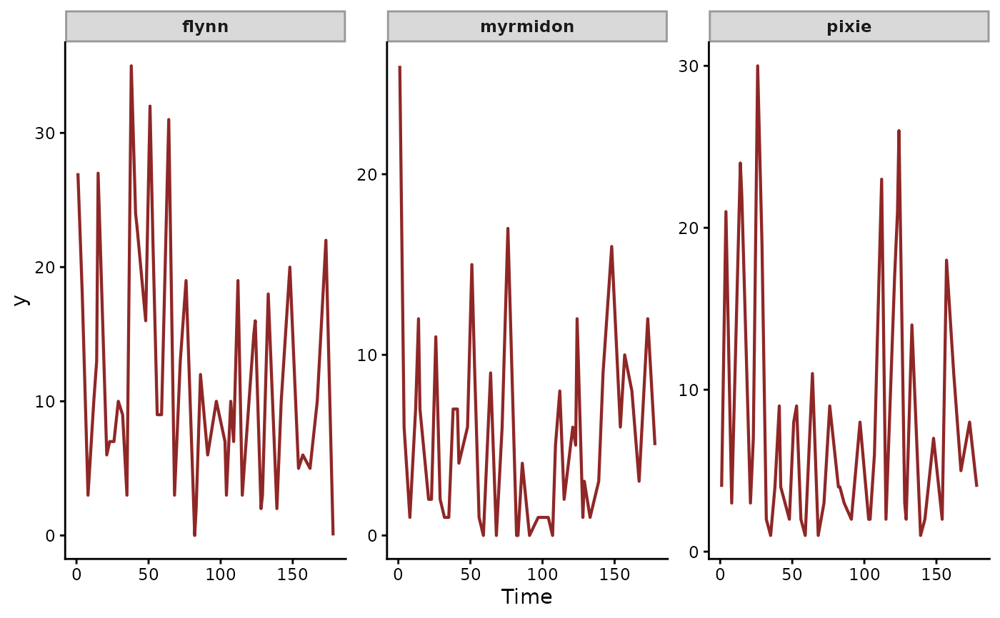

Simulated coral bleaching surveys with an irregular CAR(1) state
Source:R/coral_surveys.R
coral_surveys.RdA state-space dataset for three coral reefs surveyed at
irregular monthly intervals (gap distribution
Uniform(1, 6) months, mean approximately 3.5). Each survey
inspects between 20 and 40 colonies and counts those that have
bleached. The latent state is a continuous-time AR(1) (CAR(1))
trend per reef with phi = 0.9 and sigma = 0.3 on the logit
scale. The observation equation adds an observed sea-surface
temperature (SST) driver through a smooth nonlinear effect.
Format
A data.frame with 150 rows and the following fields:
- series
factor identifying the reef (
flynn,myrmidon,pixie); duplicated asreef.- time
integer month index (irregularly spaced within each reef).
- y
integer count of bleached colonies; duplicated as
bleaching.- reef
factor, alias of
series.- sst
numeric observed sea-surface temperature in degrees Celsius.
- bleaching
integer count of bleached colonies, alias of
y.- colonies
integer number of colonies inspected, the binomial trials.
Details
A naive AR(1) treats every consecutive survey as one step. It
gives a one-month gap and a six-month gap the same persistence.
trend_formula = ~ CAR() with the supplied time column decays
the state by the length of each gap. Its ar1_trend measures the
persistence over the median gap between surveys, three months
here. The simulated value is 0.9^3 = 0.73.
True generative components, on the logit scale:
An intercept of -0.85, which puts a typical survey near 30% bleached. Each reef adds its own centred intercept.
Latent CAR(1) state per reef with
phi = 0.9andsigma = 0.3, propagated throughtrend[t] = phi^dt * trend[t-1] + N(0, sigma * sqrt((1 - phi^(2*dt)) / (1 - phi^2))).Shared smooth nonlinear effect of SST, evaluated through a thin-plate basis.
Binomial observations:
bleaching ~ Binomial(colonies, p).
See also
CAR() for the trend, AR() for evenly spaced surveys,
mvgam_data() to check the data.
Examples
data(coral_surveys)
mvgam_data(coral_surveys, formula = y | trials(colonies) ~ s(sst),
family = binomial())
#> ✔ Data check passed for family 'binomial (link = logit)'.
#> • series: 3 levels
#> • time: 1 to 178
#> • n obs: 150 (0 NA)

# \dontrun{
# A model with the structure the data were simulated from
mod <- mvgam(
formula = y | trials(colonies) ~ series + s(sst, k = 8),
trend_formula = ~ CAR(),
data = coral_surveys,
family = binomial(),
chains = 2, silent = 2
)
#> Warning: 32 of 2000 (2.0%) transitions ended with a divergence.
#> See https://mc-stan.org/misc/warnings for details.
summary(mod)
#> Family: binomial
#> Links: mu = logit
#> Formula: y | trials(colonies) ~ series + s(sst, k = 8)
#> Data: coral_surveys (Number of observations: 150)
#> Series: 3
#> Trends: CAR
#> Draws: 2 chains, each with iter = 2000; warmup = 1000; thin = 1;
#> total post-warmup draws = 2000
#>
#> == Observation Model ==
#> Smoothing Spline Hyperparameters:
#> Estimate Est.Error l-95% CI u-95% CI Rhat Bulk_ESS Tail_ESS
#> sds(ssst_1) 2.48 1.33 0.76 5.72 1.00 689 974
#>
#> Regression Coefficients:
#> Estimate Est.Error l-95% CI u-95% CI Rhat Bulk_ESS Tail_ESS
#> Intercept -0.63 0.27 -0.96 -0.23 1.00 616 408
#> seriesmyrmidon -0.83 0.61 -1.90 0.58 1.00 537 454
#> seriespixie -0.62 0.50 -1.62 0.34 1.00 626 362
#> ssst_1 13.22 4.81 6.10 24.73 1.00 821 946
#>
#> == Trend Model ==
#> Trend Specific Parameters:
#> Estimate Est.Error l-95% CI u-95% CI Rhat Bulk_ESS
#> sigma_trend[flynn] 0.55 0.11 0.34 0.78 1.00 703
#> sigma_trend[myrmidon] 0.44 0.11 0.26 0.69 1.00 975
#> sigma_trend[pixie] 0.47 0.09 0.31 0.67 1.00 1063
#> ar1_trend[flynn] 0.47 0.20 0.08 0.84 1.01 489
#> ar1_trend[myrmidon] 0.82 0.12 0.50 0.98 1.00 707
#> ar1_trend[pixie] 0.77 0.12 0.49 0.97 1.00 616
#> Tail_ESS
#> sigma_trend[flynn] 1283
#> sigma_trend[myrmidon] 1374
#> sigma_trend[pixie] 1174
#> ar1_trend[flynn] 407
#> ar1_trend[myrmidon] 930
#> ar1_trend[pixie] 505
#>
#> Draws were sampled using sampling(NUTS). For each parameter, Bulk_ESS
#> and Tail_ESS are effective sample size measures, and Rhat is the potential
#> scale reduction factor on split chains (at convergence, Rhat = 1).
#>
#> Next steps:
#> - `pp_check(fit)`: posterior predictive checks
#> - `forecast(fit, newdata = ...)`: out-of-sample forecasts
#> - `lfo_cv(fit)`: leave-future-out model comparison
#> - `conditional_effects(fit)`: covariate effects
#> Use `how_to_cite(fit)` for a methods paragraph and `methods_md(fit)` for its equations.
# }